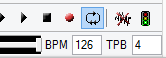
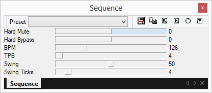
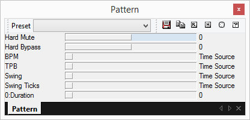
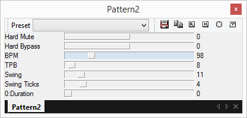
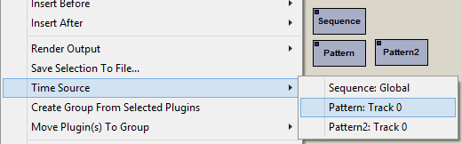

The BPM and TPB textboxes in the main toolbar specify the global tempo.
The main toolbar provides access to global BPM and TPB only. If you wish to change the global swing amount/length, you need to create an instance of the Sequence plugin and set its parameters. Likewise, in order to automate the global tempo parameters in a pattern, you need to create a Sequence plugin instance as well. There can only be one Sequence plugin in a project, and it always corresponds to the global tempo.
The global tempo affects primarily the currently playing pattern in the order list, although it is usually inherited in sub patterns by using Pattern Player plugins.
It is possible to override parts of the tempo signature for individual patterns using the Pattern Player plugin.
 By default, the tempo parameters are set to "Time Source", meaning the Pattern Player will use tempo information usually derived from the global tempo. The "Time source" usually refers to the global tempo, but in some cases could be set explicitly to refer another Pattern Player plugin.
Time sources allow exposing different tempo signatures to particular plugins. For example, delay and arpeggiators plugins could use tempo information exposed by the host to determine tick lengths. Changing the time source "tricks" these plugins into seeing a different tempo without affecting the host playback tempo.
Time sources can be set on any plugins, although not all plugins use this information. It is possible to chain Pattern Player plugins this way (and create "infinite time loops" - don't!).
Traditionally, to create a swing/shuffle effect one had to automate the tempo to swing the entire sequence, or use a MIDI plugin to swing the timestamps of MIDI notes and control changes.
A new, built-in shuffle/swing feature is also available via the Sequence and Pattern Player plugins through the "Swing" and "Swing Ticks" parameters.
The Swing parameter specifies where the swing occurs, relative to each beat. The default swing value of 50% means the swing occurs in the middle of the beat = no swing. A low swing value will swing early, and a high value will swing late.
The number of rows to swing in a beat is determined by the swing ticks parameter.
When swinging patterns played at an even number of swing ticks (2, 4, 6 etc), the number of rows per beat can always be split in two equally long integer size chunks. At odd number of swing ticks (1, 3, 5), the beat cannot be split into two equally long chunks: theres will always be extra row which falls "outside" of the swing. In these cases the the last row of the beat is played at the target tempo so that the total time of the beat parts matches the "outer beat".
The "Resolution" property on patterns is a TPB multiplier per pattern and affects swing etc during playback.